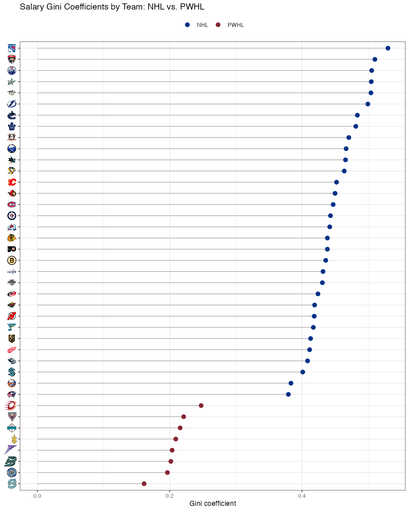

The PWHLPA made their player salary data public today! To state the obvious, the PWHL salary range ($37k-126k) is quite different from the range in the NHL ($775k-14M). But I’m curious not in the differences between the two leagues, but the differences within the two leagues.
By that I mean: how unequal are the salaries within the PWHL compared to the level of salary inequality within the NHL? I found that PWHL teams have significantly higher levels of within-team equality than NHL teams.
I use the standard measure for income inequality: the Gini coefficient, which measures inequality on a scale from 0 to 1. If everyone on the team had the same salary, the Gini would be 0; if one player made the entire cap and everyone else played for free, the Gini would be 1.
I find that PWHL teams have Gini coefficients ranging from 0.16 to 0.25, while NHL teams range from 0.38 to 0.53. The NHL teams with the most within-team income inequality are NYR, FLA, and EDM. The Seattle Torrent have the most income equality among all PWHL (or NHL) teams.

In the NHL, the four teams left in the playoffs (at least as of 10:10 PM ET!) all fall in the lower-middle of the pack when it comes to within-team income inequality, meaning a more stable spread of the salary cap across the team worked best for playoff success this season.
But in the PWHL, maybe those higher-paid stars have a bigger impact on the game in these early years, because the two teams with the highest levels of within-team income inequality (Ottawa & Montreal) both made it to the PWHL finals.
Overall, strategies for effective salary breakdown differs substantially between the PWHL + NHL. NHL teams as a whole have more inequality, but successful teams this year have been relatively equal; the PWHL is more equal as a whole, with the finalists having the most inequality.
Sources:
https://www.pwhlpa.com/salary-guide
https://www.thepwhl.com/en/stats/player-stats
https://www.spotrac.com/nhl/rankings/player/_/year/2025/sort/cap_total
https://www.nhl.com/stats/
https://ourworldindata.org/what-is-the-gini-coefficient